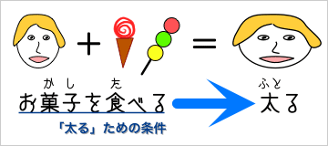

条件をあらわす表現
「ＡならＢだ」や「ＡすればＢだ」、「ＡするとＢだ」のように、あるできごと［Ａ］が、別のできごと［Ｂ］の条件となることを示す表現を条件表現という。
お菓子を食べると太ります。
画：劉書賓
条件表現：「ＡするとＢだ」 ＝ ＡがＢの条件

お菓子を食べると太ります。
条件表現の文型
条件表現には、次のような文型がある。
- 「〜たら……」 【→条件表現の『たら』】
- 「〜なら……」 【→条件表現の『なら』】
- 「〜（れ）ば……」 【→条件表現の『(れ)ば』】
- 「〜と……」 【→条件表現の『と』】
条件をあらわす表現の使い分け
条件表現の使い分け
| Ｂが過去の出来事を表わす場合 |
|---|
| Ａ | Ｂ |
|---|
| 窓を | 開けたら | ○ | 雨が降っていた。
→ 過去の出来事 |
| 開けるなら | × |
| 開ければ | × |
| 開けると | ○ |
| ＡとＢが同時に生じる出来事である場合 |
|---|
| Ａ | Ｂ |
|---|
| 今 | 出掛けたら | × | 傘を持って行きなさい。
→ 出掛ける・傘を持っていく＝同時の出来事 |
| 出掛けるなら | ○ |
| 出掛ければ | × |
| 出掛けると | × |
| ＡとＢの前後関係が明確な場合 |
|---|
| Ａ | Ｂ |
|---|
| 家に | 帰ったら | ○ | いつも手を洗います。
→ 家に帰る(前の出来事)・手を洗う(後の出来事) |
| 帰るなら | × |
| 帰れば | ○ |
| 帰ると | ○ |
| ＡとＢが連続する動作である場合 |
|---|
| Ａ | Ｂ |
|---|
| 彼女は | 立ち上がったら | × | 部屋を出て行った。
→ 立ち上がる(動作１)・出て行く(動作２) |
| 立ち上がるなら | × |
| 立ち上がれば | × |
| 立ち上がると | ○ |
| Ａが具体的な時を表わす場合 |
|---|
| Ａ | Ｂ |
|---|
| これから家に | 帰ったら | ○ | まず手を洗います。
→ これから家に帰る＝具体的な時を表わす |
| 帰るなら | × |
| 帰れば | × |
| 帰ると | × |
| Ｂが命令を表わす場合 |
|---|
| Ａ | Ｂ |
|---|
| 勉強が | 嫌いだったら | ○ | 出て行け。
出て行きなさい。
→ 命令の表現 |
| 嫌いなら | ○ |
| 嫌いならば | ○ |
| 嫌いだと | × |
| Ｂが依頼や勧誘を表わす場合 |
|---|
| Ａ | Ｂ |
|---|
| 明日 | 晴れたら | ○ | 海に行ってください。（→ 依頼）
海に行きましょう。（→ 勧誘） |
| 晴れなら | ○ |
| 晴れれば | ○ |
| 晴れると | × |
| Ｂが意志や希望を表わす場合 |
|---|
| Ａ | Ｂ |
|---|
| 明日 | 晴れたら | ○ | 海に行こうと思う。（→ 意志）
海に行くつもりだ。（→ 意志）
海に行きたい。（→ 希望） |
| 晴れなら | ○ |
| 晴れれば | ○ |
| 晴れると | × |
| Ｂが禁止や忠告を表わす場合 |
|---|
| Ａ | Ｂ |
|---|
| 明日 | 晴れたら | ○ | 海に行くな。（→ 禁止）
海に行ってはいけません。（→ 禁止）
海に行く方がいい。（→ 忠告）
海に行かない方がいい。（→ 忠告） |
| 晴れなら | ○ |
| 晴れれば | ○ |
| 晴れると | × |
| Ｂが推量や判断を表わす場合 |
|---|
| Ａ | Ｂ |
|---|
| 明日 | 晴れたら | ○ | 暑くなるだろう（→ 推量）
暑くなるかもしれない。（→ 推量）
暑くなるはずだ。（→ 判断）
暑くなるに違いない。（→ 判断） |
| 晴れなら | ○ |
| 晴れれば | ○ |
| 晴れると | ○ |
条件表現の意味合いの違い
- 春になったら花が咲きます。
- 『次の春には花が咲く』という意味合い。特定の出来事の間のつながり。
- 春になるなら花が咲きます。
- 『もしもこれから春になる場合は花が咲くだろう』という意味合い。仮定した出来事の間のつながり。
- 春になれば花が咲きます。
- 『春には花が咲くものだ』という意味合い。必然的で当然なつながり。
- 春になると花が咲きます。
- 『いつも春には花が咲く』という意味合い。常識的で自然なつながり。